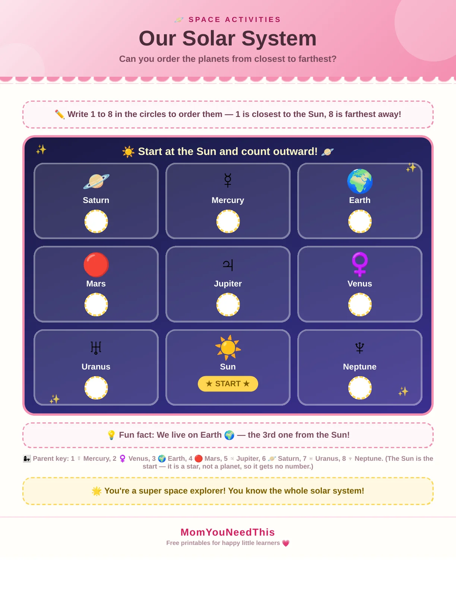

☀️🪐 Our Solar System Meet The Planet Family
Quick Answer
This free printable solar system activity introduces toddlers and preschoolers (ages 2–5) to the eight planets in order from the Sun — Mercury, Venus, Earth, Mars, Jupiter, Saturn, Uranus, Neptune — with one unforgettable fact for each. Kids order the planets, match planets to their features, and learn what makes our neighborhood in space special. Download and print at home with no signup needed.
Eight planets circle our sun — each one different and amazing. These activities introduce the solar system in simple, memorable ways for young space fans.
Eight planets is a lot of names for a small child — unless each planet arrives carrying one fact too good to drop. This page is built on that principle: the giant with the storm, the one with the rings, the red one, the sideways one. Order first, facts attached, and the solar system becomes a parade a preschooler can actually march in.
☀️🪐 Explore Our Solar System
Order the planets, match planets to their features, and learn fun facts about our solar system.
💡 How To Use This Activity
Print the planet pages in order from the sun and lay them out across the floor — then walk the solar system together, one planet per stop. At the far end, let your child pick a favourite planet and tell you one thing that makes it different from its neighbours. The print button opens the full-size page in a new tab if you prefer to print from there.

🖨️ Download Your Free Our Solar System Printable
Order the planets, match planets to their features, and learn fun facts about our solar system. Print it out, grab the crayons, and you're ready — no signup needed.
⬇️ Download Free Printable 🖨️ Print🎁 Free printable for toddlers & preschoolers
🪐 The Eight Planets, One Fact Each
Mercury — closest to the Sun and the fastest: it races around in just 88 days, so a year there is shorter than a season here.
Venus — the hottest planet, wrapped in thick clouds that trap heat like a blanket that cannot be kicked off. It also spins backwards compared to most planets — a slow, contrary world.
Earth — home: the only planet known to have life, liquid-water oceans, and exactly the right distance from the Sun — not too hot, not too cold. Astronomers call that the Goldilocks zone, and children who know the story get the joke instantly.
Mars — the red planet, colored by rusty iron dust. It hosts the tallest volcano in the solar system, and robot rovers are exploring it right now, today, while your child colors it.
Jupiter — the giant: more than a thousand Earths would fit inside. Its Great Red Spot is a storm bigger than Earth that has been blowing for centuries.
Saturn — the rings: billions of ice and rock pieces, shining in sunlight. Saturn is so light for its size that it would float in a big enough bathtub.
Uranus — the sideways planet, tipped right over, rolling around the Sun like a barrel. Neptune — the farthest and windiest, with storms faster than any on Earth, a deep blue world a thirty-year trip from the Sun's warmth.
The parade order — Mercury, Venus, Earth, Mars, Jupiter, Saturn, Uranus, Neptune — is the one piece of pure memorization here, and the floor walk in the guide below turns even that into a journey rather than a list.
❓ Our Solar System FAQs
What activities are included in Our Solar System?
This page collects our free solar system printables in one place: ordering the eight planets from the Sun, matching planets to their features (rings, the red dust, the giant storm), and learning fun facts about our solar system. Download the printable below and start learning right away.
Are these activities really free?
Yes — every printable on MomYouNeedThis is 100% free to download and print. No signup, no payment, just tap the download button. Lay the printed planets across the floor in order and the set becomes a walkable solar system — no other supplies needed. Lay the printed planets across the floor in order and the set becomes a walkable solar system — no other supplies needed.
How do I use these activities with my child?
Print the planet pages in order from the Sun and lay them out across the floor — then walk the solar system together, one planet per stop, saying each planet's fact as you land. At the far end, let your child pick a favorite planet and tell you why: the favorite, and the reason, are what they will still know next month.